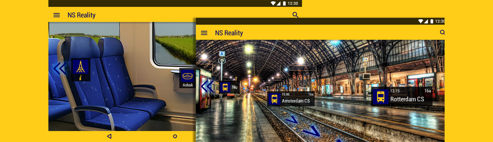

Meet Art

Apple iBike
Apple heeft wederom innovatie gepleegd. De fiets van de toekomst! Mis het midnight launch niet! De eerste bezoeker maakt kans op een proefrit!
Groenteman Bakker
Bezoek de app van Groenteman Bakker! Bestel verse groenten en fruit op een gemakkelijk maar ook leuke manier!
NS Reality
De nieuwste innovatie van de NS. Kijk snel waar je heen moet op een simpele manier! Ook binnen de treinen kun je van alles uit je omgeving beleven!
Toyota Futury
Toyota presenteert een nieuw reeks auto's, direct uit de toekomst. Rij hierin en je zult zeker opvallen!